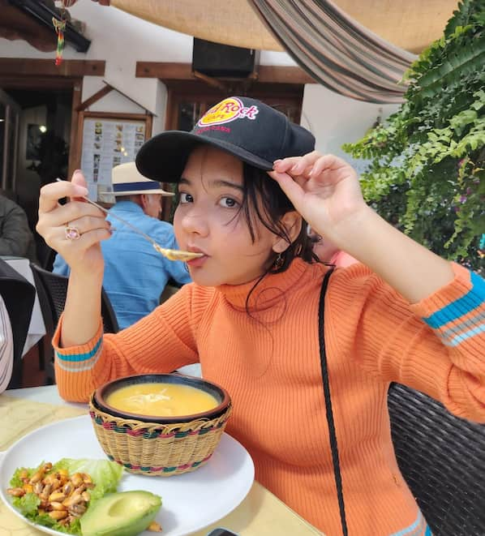

Melissa Murillo | WDD 130
Hello! As you can tell from the title, my name is Melissa Murillo. I am from Guayaquil,Ecuador.I enjoy being indoors most of the time. I love cinema and music; my favorite film is All About Lily Chou-Chou, and my favorite bands are HIM,Buck-Tick and NCT. My expectations for this course are to engage more with web development and gain skills in this field.